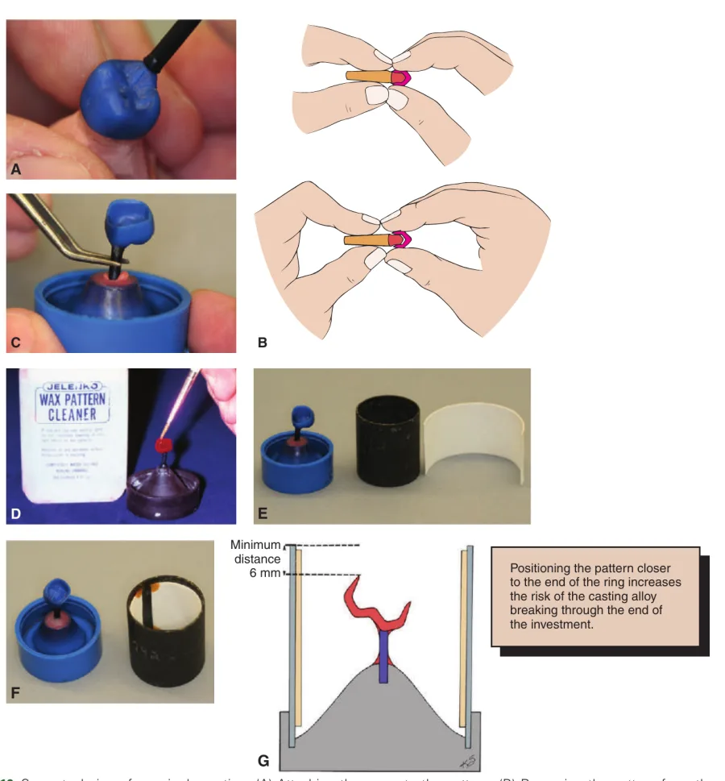

نسخه استخراجشده؛ ترجمه یا تأیید علمی انجام نشده است. وضعیت: captured
خلاصهی فرایند: «احاطه کردن الگوی مومی با مولدی از مادهی اینوستمنت مقاوم به حرارت، سپس حذف موم با گرم کردن، و وارد کردن فلز مذاب به مولد از راه کانالی به نام اسپرو.» و معیار موفقیت: «ریختگی باید بازتولید بسیار دقیقی از الگوی مومی، هم در جزئیات سطحی و هم در ابعاد کلی باشد.» و هشدار: «تغییرات کوچک در اینوست کردن یا ریختهگری میتوانند بهطور معناداری بر کیفیت ترمیم دائمی اثر بگذارند.»
و پیش از اسپروگذاری: الگوی ریفلوشده از نظر صافی، پرداخت و کانتور ارزیابی و زیر بزرگنمایی بازرسی میشود، و هر فلاش باقیمانده (مومی که از لبهی تراش جلوتر رفته) برداشته میشود.
و یک الزام زمانی: «الگوی مومی باید بلافاصله اینوست شود، چون هر تأخیری به تغییر شکل الگو در نتیجهی رهایی تنش موم میانجامد.»
و انتخاب جنس اسپرو: «اسپروهای مومی برای بیشتر ریختگیها ترجیح دارند چون با همان نرخ الگو ذوب میشوند و بدین ترتیب فرار آسان موم مذاب را ممکن میکنند. اسپروهای پلاستیکی توپر در دمای بالاتری از الگوی مومی نرم میشوند و ممکن است فرار موم را مسدود کنند، که به زبری بیشتر ریختگی میانجامد.» ولی «اسپروهای پلاستیکی میتوانند وقتی پروتزها یکتکه ریخته میشوند سودمند باشند، چون صلبیت افزودهشان تغییر شکل را به حداقل میرساند».
و اسپروی فلزی: «باید از فلز غیرخورنده باشد تا از آلودگی احتمالی ریختگی جلوگیری شود.» و یک هشدار: «تکنسین باید دهانه را با دقت زیاد از نظر ذرات کوچک اینوستمنت که ممکن است هنگام برداشتن چنین اسپرویی جدا شوند بررسی کند، چون اینها اگر تشخیص داده نشوند میتوانند ناقص بودن ریختگی ایجاد کنند.»
و دو خطای متقارن در محل اتصال اسپرو: «برای تکنیک گریز از مرکز، ناحیهی اتصال نباید محدود شود، چون باریک شدن، تخلخل ریختگی را افزایش و پر شدن مولد را کاهش میدهد. به همین ترتیب، پهن کردن بیش از حد اتصال میتواند باعث شود این بخش از مذاب در حال سرد شدن آخر از همه جامد شود و حفرهای در جنبهی داخلی ریختگی ایجاد کند، که به آن تخلخل نقطهی انقباض میگویند.»
و اعداد و زاویهی اسپرو: «اسپرویی با قطر ۲٫۵ میلیمتر (گیج ۱۰) برای مولر و الگوهای متالسرامیک، یا ۲ میلیمتر (گیج ۱۲) برای پرمولر و ترمیمهای پوشش ناقص به حجیمترین کاسپ نانفانکشنال متصل میشود» و طوری موقعیت میگیرد که «زاویهی منفرجهای با دیوارههای اگزیال و سطح اکلوزال مجاور — معمولاً حدود ۱۳۵ درجه — بسازد، که پر شدن مولد را تسهیل میکند».
و لاینر رینگ: «آزبست دیگر به کار نمیرود؛ اکنون لاینرهای کاغذ سلولزی یا الیاف سرامیکی نسوز استفاده میشوند.» و اثرشان بر انبساط: «مرطوب کردن لاینر، انبساط هیگروسکوپیک مولد را افزایش میدهد»؛ و «یک لاینر خشک جاذب، آب را از اینوستمنت میگیرد و مخلوط را غلیظتر میکند، که به افزایش انبساط کل میانجامد». و یک احتیاط: «باید دقت شود لاینر به رینگ فشرده نشود تا محدودیت انبساط ایجاد نگردد.»
و موقعیت الگو در رینگ: «یک روکش تکی باید در مرکز رینگ و همفاصله از دیوارههایش قرار گیرد. وقتی پروتزها یکتکه ریخته میشوند، دقت بهتر است اگر الگو نزدیک مرکز یک رینگ بزرگ یا بیضی ویژه قرار گیرد.» و پوشش لازم: «رینگ باید بهقدر کافی بلند باشد تا الگو را با حدود ۶ میلیمتر اینوستمنت بپوشاند.»
و سه خانوادهی اینوستمنت بر پایهی بایندر: «گچباند برای ریختگیهای آلیاژهای با بازهی ذوب پایینتر؛ فسفاتباند برای فریمورکهای متالسرامیک؛ و سیلیکاباند برای آلیاژهای فلز پایهی پرذوب که در پروتز پارسیل متحرک به کار میروند.»
و مرز دمایی که همهچیز را تعیین میکند: «گچ در دماهای فراتر از ۶۵۰ درجهی سانتیگراد از نظر شیمیایی پایدار نیست، بنابراین این اینوستمنتها معمولاً به ریختگیهای آلیاژهای طلای متعارف نوع II، III و IV محدودند.» و در مقابل، فسفاتباند «در دماهای برنتاوت بالای ۶۵۰ درجه پایدار است، که انبساط حرارتی افزوده را ممکن میکند» و «استحکام اینوستمنت با افزایش دما زیاد میشود».
و چرا گچباند برای متالسرامیک نه: گچ در دمای بالای لازم ناپایدار است و ممکن است آلودگی سولفیدی آلیاژ رخ دهد. بایندر اینوستمنت فسفاتباند اکسید منیزیم و یک ترکیب فسفات آمونیوم است و بیشتر این اینوستمنتها با سوسپانسیون سیلیکای کلوئیدی در آب مخلوط میشوند (برخی با آب تنها).
و منشأ انبساط حرارتی گچباند: «مادهی نسوز سیلیکا عمدتاً مسئول است، به دلیل تبدیلهای فاز حالت جامد. کریستوبالیت میان ۲۰۰ تا ۲۷۰ درجه از فرم دما-پایین به دما-بالا تغییر میکند؛ کوارتز در ۵۷۵ درجه تبدیل میشود.»

چرا انبساط اصلاً میخواهیم: «ریختگیای که اندکی و به شیوهای کنترلشده بزرگتر باشد، برای نشست دقیق سودمند است.»
و عوامل افزایندهی انبساط اینوستمنت گچباند: «لاینر رینگ تمامعرض؛ اسپاتوله کردن طولانی؛ نگهداری در رطوبت ۱۰۰ درصد؛ نسبت آب به پودر پایینتر؛ لاینر خشک؛ دو لاینر رینگ؛ و تکنیک هیگروسکوپیک.»
و مبادلهی اینوستمنت فسفاتباند: مزایا — «پایدارتر در دماهای بالا و بنابراین مادهی انتخابی برای ریختهگری آلیاژهای متالسرامیک»؛ «بهسرعت در دماهای ریختهگری منبسط میشوند و انبساطشان بهراحتی و بهدقت قابل کنترل است». معایب — «ریختگیهای ساختهشده با فسفاتباند زبرتر از گچباندند؛ خارج کردنشان از اینوستمنت دشوارتر است؛ و چون تخلخل کمتری دارند، پر شدن کامل مولد دشوارتر است. ریختگیها همچنین محتملتر است ندول سطحی داشته باشند.»
و راه سادهی کنترل انبساط فسفاتباند: «انبساط میتواند بهراحتی با رقیق کردن اندک سیلیکای کلوئیدی با آب مقطر کنترل شود.» و اثر جانبیاش: «افزودن آب زمان کار را افزایش میدهد، با مقداری از دست رفتن انبساط ست شدن.» و یک هشدار: «زمان اختلاط طولانیتر، واکنش و دمای ست شدن را بهطور معناداری تسریع میکند و زمان کار را باز هم کمتر میکند.»
و اختلاط تحت خلأ: «بهشدت توصیه میشود برای نتایج یکنواخت با حداقل نقص سطحی، بهویژه وقتی اینوستمنت فسفاتباند به کار میرود.» و روش پیشنهادی: «اختلاط تحت خلأ با اعمال قلممویی اینوستمنت.»
و قواعد برنتاوت: «همهی آب اینوستمنت باید حین حذف موم رانده شود. دما باید بهقدر کافی بالا باشد و بهقدر کافی طولانی حفظ شود («خیسخوردن حرارتی») تا افت ناگهانی دما هنگام خروج از کوره به حداقل برسد» — چنین افتی «میتواند به ریختگی ناقص به دلیل جامد شدن بیش از حد سریع آلیاژ هنگام ورود به مولد بینجامد».
و قاعدهی هیسترزیس: «وقتی اینوستمنت حین حذف موم گرم شد، گرم کردن باید ادامه یابد و ریختهگری باید کامل شود. سرد کردن و گرم کردن دوبارهی اینوستمنت میتواند نادقتی ریختهگری ایجاد کند، چون مولد نسوز و بایندر به فرم اولیهشان بازنمیگردند (هیسترزیس). نتایج معمول، انبساط ناکافی و ترک خوردن اینوستمنت است.»
و اعداد برنتاوت: «دما را به دمای نهایی برنتاوت — عموماً ۶۵۰ درجه، یا ۴۸۰ درجه اگر تکنیک هیگروسکوپیک به کار رود — افزایش بده و ۴۵ دقیقه نگه دار.» و یک هشدار: «اینوستمنت نباید بیش از حد گرم یا بیش از حد در دمای انتخابی نگه داشته شود» — و در اینوستمنتهای حاوی کربن، «مقداری کربن میسوزد که زبری سطحی ریختگی را افزایش میدهد».
و روش شتابیافته: روشهای متعارف «معمولاً ۱ ساعت ست شدن روی میز و ۱ تا ۲ ساعت حذف موم» میخواهند. روش شتابیافته این را به «۳۰ تا ۴۰ دقیقه» میرساند: «حدود ۱۵ دقیقه ست شدن روی میز و ۱۵ دقیقه حذف موم با قرار دادن رینگ در کورهی از پیش گرمشده تا ۸۱۵ درجه» — و نتایجش «دقت و زبری سطحی مشابه روشهای سنتی» گزارش شده است. این روش با اینوستمنت فسفاتباند انجام میشود و نخست برای ساخت پست و کور ریختگی در یک جلسه پیشنهاد شد.
و جرم آلیاژ لازم: «جرم آلیاژ باید برای حفظ فشار کافی ریختهگری کافی باشد. با آلیاژ نجیب پرچگالی، ۶ گرم معمولاً برای ریختگیهای پرمولر و قدامی، ۹ گرم برای مولر، و ۱۲ گرم برای پانتیک کافی است.» و تنظیم دستگاه: «سه دور ساعتگرد به دستگاه داده میشود — چهار دور اگر آلیاژهای متالسرامیک به کار روند.»
و سه عیب رایج ریختگی:
و دربارهی تیتانیوم: «ریختهگری تیتانیوم تنها در آزمایشگاههای با تجهیزات ویژه ممکن است، به دلیل نقطهی ذوب بالا و ماهیت بسیار واکنشپذیرش در دماهای بالا» — که «محیط خلأ یا اتمسفر بیاثر، ذوب قوسی و اینوستمنتهای ویژه» میطلبد. و مسئلهی سطحیاش: «واکنش تیتانیوم ریختهشده با اینوستمنت و هوای باقیمانده، ناحیهای بسیار سخت نزدیک سطح به نام آلفا-کیس میسازد که برداشتنش تلاش آزمایشگاهی ویژهای میطلبد.»
و بازیافت آلیاژ: «آلیاژهای نجیب میتوانند روی بلوک زغال با مشعل گاز-هوا ذوب شوند، که اتمسفر احیایی فراهم میکند. ناخالصیهای باقیمانده با پیکلینگ و تمیزکاری اولتراسونیک یا بخار برداشته میشوند.» و یک قاعدهی مطلق: «آلیاژهای سازندگان مختلف نباید مخلوط شوند، حتی اگر مشابه باشند.» و یک یافتهی نگرانکننده: «ریختهگری دوبارهی آلیاژهای حاوی نیکل با افزودن ۶۵ درصد فلز مازاد، فعالیت سیتوتوکسیک را بهطور معناداری افزایش داد.» آلیاژ بیش از حد گرمشده، برادهها و ترمیمهای قدیمی را دوباره به کار نبر؛ آنها را بهعنوان قراضه به سازنده برگردان.
و چند قاعدهی کارگاهی: برای آلیاژهای متالسرامیک مشعل گاز-اکسیژن لازم است و باید گاگل رنگی زد تا هم چشم محافظت شود و هم مذاب مستقیم دیده شود. در بیرون آوردن ریختگی، اینوستمنت تنها از سمت دکمه تریم میشود؛ سمت دیگر را به دلیل خطر آسیب به مارجین تریم نکن. ریختگی را پیش از بررسی سطح داخلی زیر بزرگنمایی روی دای امتحان نکن. اگر روی دای ننشست، علت معمولاً ندول، تغییر شکل موم، فلاش سرویکالی یا کمانبساطی اینوستمنت است. وقتی قیمت فلزات نجیب بالاست، بازیابی قراضه — از متالکچر در نواحی پرداخت تا مکش فیلتردار روی همهی میزها — اقتصادی میشود. و به دلایل ایمنی، آزبست دیگر در لاینر رینگ و نمکهای اورانیوم در پرسلن دندانی به کار نمیروند.